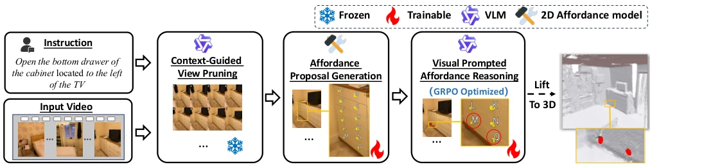
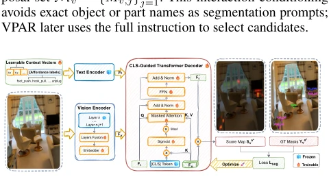
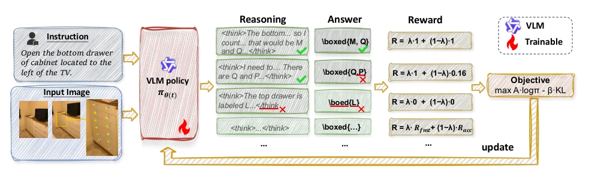
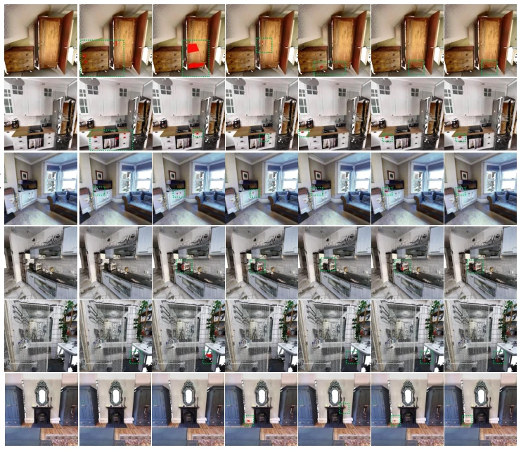
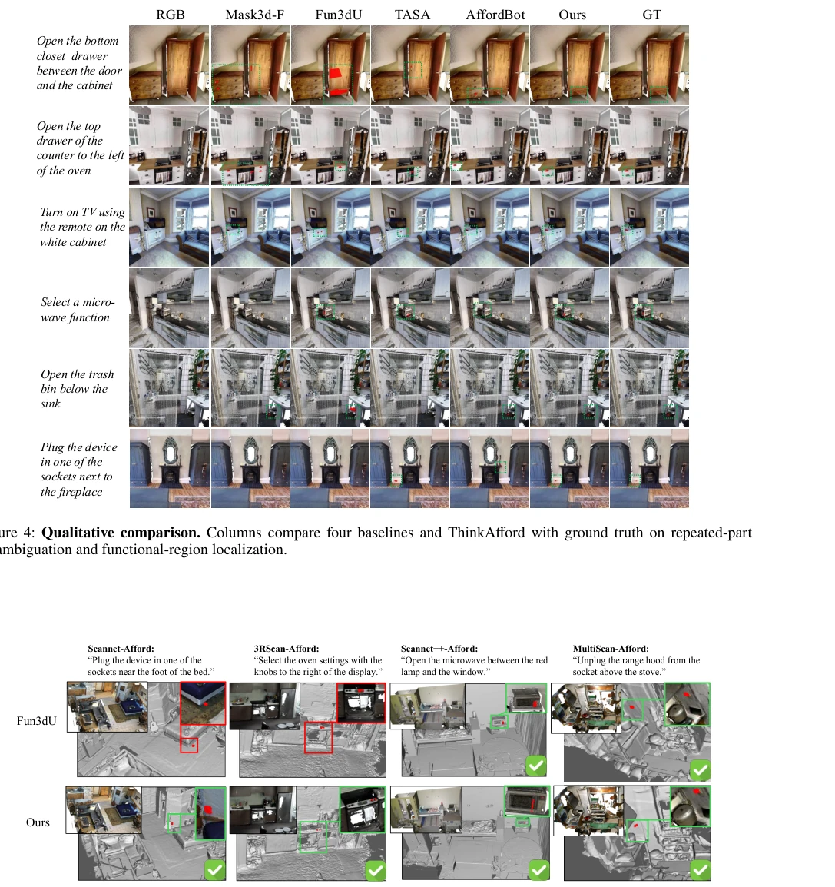
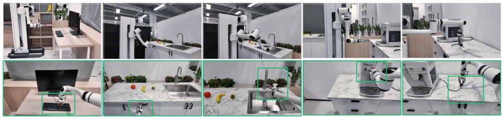

ThinkAfford 给 3D 具身感知来了剂“强化学习”的猛药。它把任务拆解为“生成提议”和“推理选择”，试图用 GRPO 让大模型学会在杂乱场景中“挑刺”。亮点是 APG 模块不再依赖物体名称，直接预测交互热图，这对细粒度操作很友好，避免了“抽屉”变成“柜体”的尴尬。但缺点也明显：终究还是 2D 掩码升维到 3D，遮挡严重的场景下，2D 信息的丢失可能让 3D 定位变成“猜谜”。而且 GRPO 训练成本高，对于实时性要求高的机器人，这“思考”过程会不会太慢？总之，在 SceneFun3D 上赢了，但离真正鲁棒的具身智能还有距离，边界精度依然是硬伤。
ThinkAfford administers a "potent dose of reinforcement learning" to 3D embodied perception. It decomposes the task into "proposal generation" and "reasoning selection", attempting to use GRPO to enable large models to "pick flaws" in cluttered scenes. The highlight is that the APG module no longer relies on object names, directly predicting interaction heatmaps, which is friendly to fine-grained operations, avoiding the awkwardness of "drawers" becoming "cabinets". However, the drawbacks are obvious: ultimately it is still elevating 2D masks to 3D; under severe occlusion, the loss of 2D information may turn 3D localization into "guesswork". Moreover, GRPO training costs are high; for robots with high real-time requirements, might this "thinking" process be too slow? In conclusion, it wins on SceneFun3D, but there is still a gap to truly robust embodied intelligence, and boundary accuracy remains a critical flaw.
研究动机Motivation
具身智能需要精准定位 3D 场景中的功能区域，而非整个物体。现有方法如 OpenMask3D (Takmaz et al. 2023) 和 LERF (Kerr et al. 2023) 往往输出物体级掩码，忽略了把手、开关等接触区域，导致无法执行“打开抽屉”等指令。Fun3DU (Corsetti et al. 2025) 和 AffordBot (Wang et al. 2026) 虽引入 VLM，但依赖中间候选集，若提议缺失或粒度不当，后续推理无法补救。此外，面对“左上抽屉”等关系指令，现有方法难以区分相似部件，容易混淆。因此，需要一种能解耦高召回提议生成与指令推理的框架，解决细粒度定位与关系消歧的双重难题，确保功能区域被正确识别且选中。
Embodied intelligence requires precise localization of functional regions in 3D scenes, rather than entire objects. Existing methods such as OpenMask3D (Takmaz et al. 2023) and LERF (Kerr et al. 2023) often output object-level masks, ignoring contact areas such as handles and switches, leading to an inability to execute instructions like "open drawer". Fun3DU (Corsetti et al. 2025) and AffordBot (Wang et al. 2026) although introducing VLM, rely on intermediate candidate sets; if proposals are missing or granularity is inappropriate, subsequent reasoning cannot remedy it. Furthermore, facing relation instructions like "top-left drawer", existing methods struggle to distinguish similar components and are prone to confusion. Therefore, a framework capable of decoupling high-recall proposal generation and instruction reasoning is needed to solve the dual challenges of fine-grained localization and relation disambiguation, ensuring functional regions are correctly identified and selected.
方法Method
ThinkAfford 流程分四步：视图剪枝、提议生成、推理选择、3D 融合。首先用 VLM 剪枝无关视图，减少计算。核心是 APG 模块，利用可学习 affordance prompts 和多级视觉特征预测交互热图，提取变长提议集，无需物体名称，保留小功能区域。接着是 VPAR，将提议标识叠加在图像上，用 GRPO 训练 VLM 进行“思考 - 回答”式选择。奖励函数基于提升后的 3D IoU，鼓励空间、序数关系正确的选择，而非单纯格式正确。最后通过加权投票融合多视图证据生成最终 3D 掩码。这种设计将覆盖率与选择准确率分开评估，便于诊断错误来源，且 GRPO 优化使得模型能更好处理复杂关系约束。
ThinkAfford process is divided into four steps: view pruning, proposal generation, reasoning selection, 3D fusion. First, use VLM to prune irrelevant views, reducing computation. The core is the APG module, utilizing learnable affordance prompts and multi-level visual features to predict interaction heatmaps, extracting variable-length proposal sets, without object names, retaining small functional regions. Next is VPAR, superimposing proposal identifiers on images, using GRPO to train VLM for "think-answer" style selection. The reward function is based on improved 3D IoU, encouraging correct spatial and ordinal relation selections, rather than merely format correctness. Finally, generate the final 3D mask by fusing multi-view evidence through weighted voting. This design evaluates coverage and selection accuracy separately, facilitating diagnosis of error sources, and GRPO optimization enables the model to better handle complex relation constraints.

Figure 1: Overview of ThinkAfford. The method keeps a compact set of views, generates affordance-centric proposals, selects proposal identifiers with a GRPO-trained VLM, and fuses the selected evidence into a 3D mask.

Figure 2: An illustration of the APG module. Frozen CLIP/DINOv2 encoders with learnable context vectors feed a CLS-guided decoder to produce affordance heatmaps.

Figure 3: GRPO training for VPAR. Given an instruction and a labeled proposal overlay, the trainable VLM samples a group of structured think-then-answer responses. Each response is parsed into proposal identifiers and scored by format correctness and proposal-level grounding accuracy, producing group-relative advantages for policy optimization.
On the SceneFun3D validation set, ThinkAfford achieves AP25 25.46% and AP50 10.69%, outperforming Fun3DU and AffordBot. Ablation experiments show that removing GRPO causes selection accuracy to drop by 8.66 points, removing APG causes AP25 to drop by 7.16 points, proving both are critical. Cross-dataset testing indicates that on unseen scenes like ScanNet, AP25 improves by an average of 6.6 points, but AP50 improvement is limited, indicating boundary accuracy remains a bottleneck. Real robot deployment demonstrates feasibility from perception to execution, but mainly validates localization rather than operation success rate. Experiments also found that APG recall improves significantly on categories like hook_pull, but still has missing cases on foot_push, indicating generalization needs strengthening.

Figure 4: Qualitative comparison. Columns compare four baselines and ThinkAfford with ground truth on repeated-part disambiguation and functional-region localization.

Figure 5: Qualitative zero-shot cross-dataset transfer. Predictions on the four unseen datasets in Table 5; boxes magnify the red 3D affordance regions.

Figure 6: Qualitative real-world deployment. Five manipulation examples with scene-level robot approach views (top) and close-up execution views of the localized interaction regions (bottom).